Reviewing Analysis Results
The easiest way to understand how the raw analysis data relates to your design is to view histograms and colormaps.
The layout is broken up into a number of windows with data values assigned for each window. The default color scheme is such that red represents the highest data values and dark blue represents the lowest data values.
The following example procedure is a tutorial with steps for reviewing analysis results. You can perform similar actions using layout data.
Try It!  |
Calibre CMPAnalyzer Tutorial and Example Kit Run a batch CMP analysis using the Calibre CMPAnalyzer simulator flow. Also learn how to calculate a user-defined hotspot, run a CMP batch bucketing flow analysis, and export CMP thickness data for parasitic extraction tools. Go to this page on Support Center to download the eKit (Documentation tab, Document Types=Getting Started Guide). The link goes to the latest release. |
Prerequisites
You have performed a CMP analysis as described in “CMP Analysis”, and you have a DFM database containing the analysis results.
Calibre DESIGNrev or another layout viewer that is supported by Calibre RVE is open with your layout loaded. See “Communication with the Design Tool” in the Calibre Interactive User’s Manual for information on communication between Calibre RVE and the layout viewer.
Procedure
- Open Calibre RVE for DFM:
From Calibre Interactive — Click Start RVE. Calibre RVE is opened and the results database on the Outputs pane is loaded.
From a layout viewer — In Calibre DESIGNrev, select Verification > Start RVE. For most other viewers, select Calibre > Start RVE.
Specify the DFM database in the “Database” entry and select a “Database Type” of DFM.
- Set the results viewing highlighting
options in the Calibre RVE for DFM user interface.
- Choose Setup >
Options from the Calibre RVE for DFM menu, then choose
the Highlighting category.Figure 1. Setting the Calibre RVE for DFM Options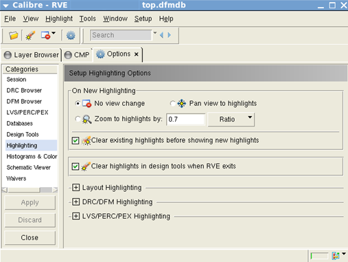
- Select Zoom to highlights by and set the value to 0.7.
- Make sure Clear existing highlights is selected.
- Switch to the DFM Browser category, select Flat next to On double-click, browse layer.
- Click Apply, then Close.
- Choose Setup >
Options from the Calibre RVE for DFM menu, then choose
the Highlighting category.
- Set the colormap display options.
- Choose Setup > Options and click the Histograms & Colormaps category.
- In the Colormaps (DFM Browser only) section of the pane, uncheck the Show Borders checkbox to display colormaps without borders.
- Click Apply, then Close.
- Review the data displayed
in the CMP tab.
When the CMP analysis is complete, a table appears, displaying metal layers (rows) and hotspots (model-based checks) applied to these metal layers (columns). The values in the table represent the number of unique violations for the hotspot and metal layer combination corresponding to that column and row. If there is no value reported, that hotspot is not applicable to that metal layer.
- Right-click on the M1 row
and choose Colormap > Density.Figure 2. Displaying a Colormap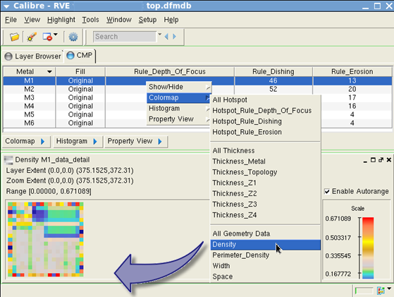
This creates a density colormap for layer M1 inside Calibre RVE for DFM.
Alternatively, you can choose Property View > Density to display a colormap and different plot types within a single window. See “Performing Data Analysis in Property View” for more information.
- Right‑click
on a tile in the colormap and display menu items for property and
plot information. You can also control the plot display and save
and export colormap data from this menuFigure 3. Colormap Right‑Click Menu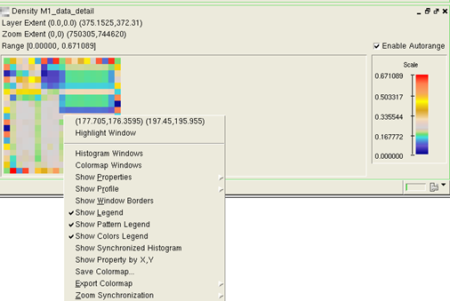
- To zoom
in on the colormap, press and hold the right mouse button, drag
the mouse down and to the right, and release the right mouse button.
To zoom out, drag the mouse up and to the left. You can synchronize
the zoom regions for two or more colormaps by checking the Enable
Zoom Synchronization for New Colormaps checkbox under
the Histogram & Colormaps category of
the Setup > Options tab and then clicking
on Apply.Figure 4. Enable Zoom Synchronization for New Colormaps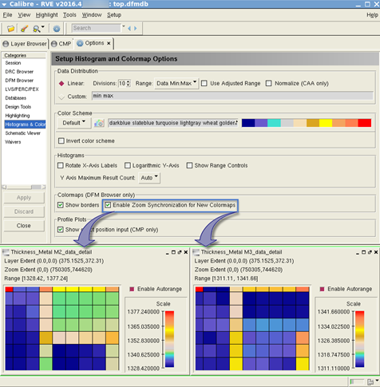
- Right‑click
on a colormap and use the Zoom Synchronization submenu
to control zoom synchronization between multiple colormaps.
Enable — Choose this checkbox to enable or disable zoom synchronization for the current colormap.
Enable for All — Choose this menu option to enable zoom synchronization for all current colormaps.
Disable for All — Choose this menu option to disable zoom synchronization for all current colormaps.
Figure 5. Colormap Right‑Click Submenu — Zoom Synchronization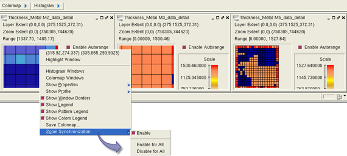 - For
colormap color definition, use the Setup > Options menu
and check the Enable Autorange checkbox on
the fast colormap to fit colors to the current visible range of values.Figure 6. Colormap with Color Range Enabled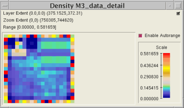
- Right‑click
on a tile in the colormap and display menu items for property and
plot information. You can also control the plot display and save
and export colormap data from this menu
- Right‑click
on the M1 row again and choose Colormap > Thickness_Topology to display
a second colormap.Figure 7. Displaying a Second Colormap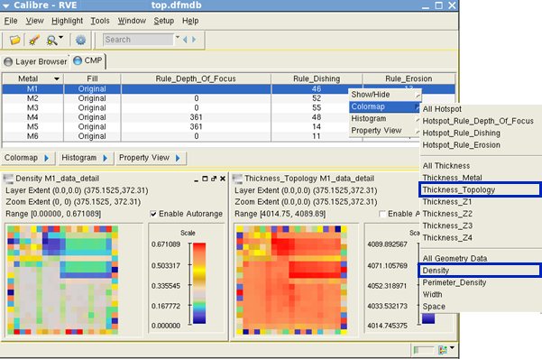
The colormap on the left displays the densities; the one on the right displays the thickness topology. The default color convention is such that the red color indicates the largest values, and the dark blue color indicates the smallest values.
You can change the color scheme by choosing Setup > Options and selecting the Histograms tab.
- In either colormap, hold your mouse over a square of interest to display a tooltip showing the value corresponding to that particular window.
- Compare metal heights for
layer M2 and layer M3.
- Close both existing colormap windows.
- Click on the lower edge of the Calibre RVE for DFM window and drag the edge down to enlarge the window size.
- Right‑click the row for M2, and choose Colormap > Thickness_Z2.
- Repeat the previous step for the M3 row.
- Choose Window > Tile
Vertical.Figure 8. Comparing Colormaps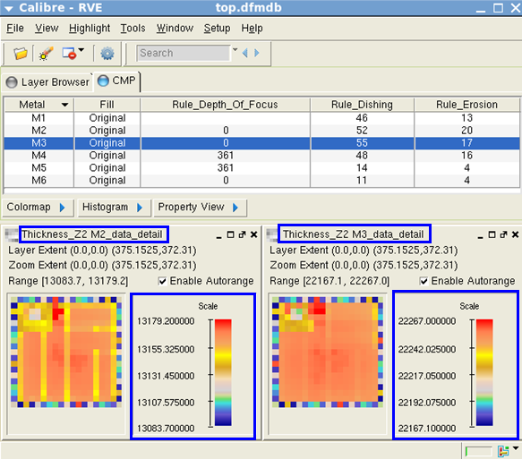
- Create a colormap and a histogram
displaying the results of the Dishing check or any other rule with
hotspots.
- From the menu, choose Window > Close All to close all existing colormap windows.
- To create a colormap quickly,
double-click on the table cell that
corresponds to the row for M2 and column for Rule_Dishing (or any
other rule with hotspots). This creates a colormap of data values
color coded throughout the chip.Figure 9. Displaying a Colormap — Double-Click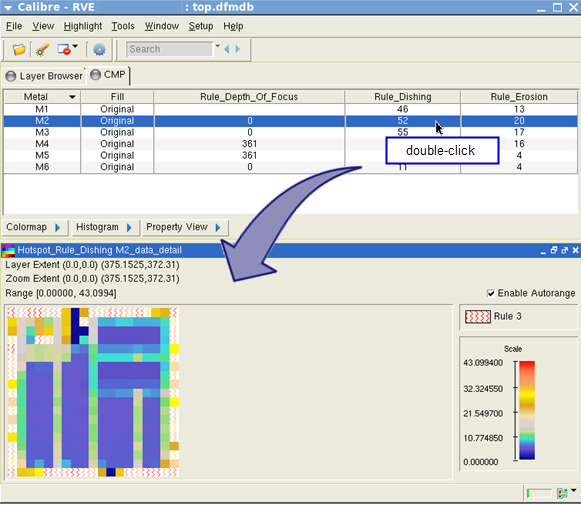
The colormap for Dishing represents the difference between oxide and metal heights. The color convention is such that the red color indicates the largest check results values, and the dark blue color indicates the smallest check results.
Note the dotted lines near the top and right sides of the colormap. These dotted lines represent the actual extent of the layout relative to the window grid. Extending the colormap beyond the actual extent allows you to visualize hotspots and other data for those portions of the design that might otherwise be represented as a tiny sliver.
You can click on the Oxide Height Min stipple pattern in the legend to highlight these tiles on the colormap and in Calibre DESIGNrev. Click the stipple pattern a second time to remove the highlighting.
- Close the colormap. Right-click
on the row for M2, then select Histogram > Hotspot_Rule_Dishing.
This creates a histogram of results sorted into 10 bins by default,
which you can change. The number above each bar in the histogram represents
the number of windows that fall within that data range. To narrow
the data range, right-click on the histogram and enable the Show
Range Controls option. Next to Range,
select Custom Min:Max and enter 100 for the
lower bound. Click Update. The histogram
is updated to reflect the new data range.Figure 10. Displaying a Histogram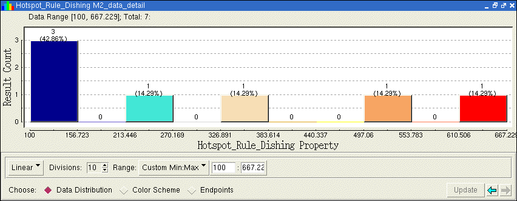
If you have limited time and are interested in only the worst areas of a layout for a particular rule, you can right-click on any histogram bar and choose Highlight This Bar to display the corresponding windows in Calibre DESIGNrev.
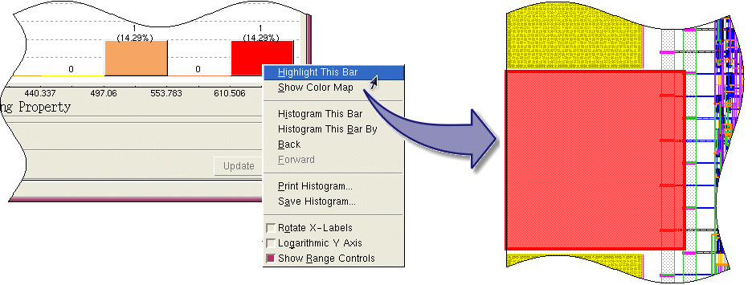 - Configure
the tooltip display to report other values for that portion of the
design.
Each square in a colormap represents a window (or rectangular area) within your design. When you place your cursor over a particular square in the colormap, you display a tool tip that reports the properties and coordinates for that window. By default, only the original property of interest and the coordinates are displayed in the tooltip window. Additional properties can be added from a property list.
- Close the histogram from the previous step. Right-click on the M1 row and choose Colormap > Thickness_Metal.
- Right-click anywhere over the colormap window to display the colormap popup menu.
- Choose Show Properties > Density.Figure 11. Configuring Tooltip Display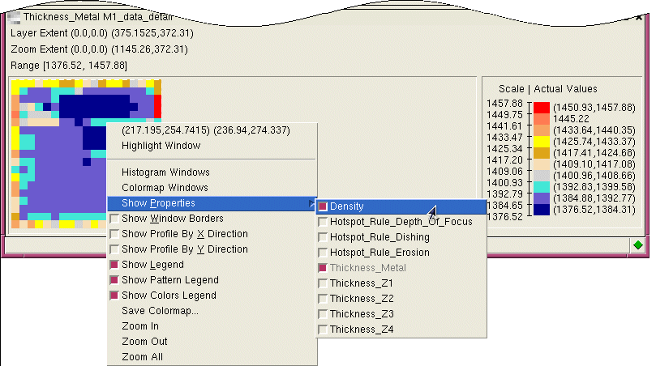Figure 12. Using Tooltip Displays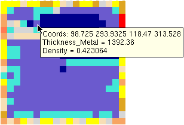
- Zoom in
on a colormap region and choose Show Synchronized Histogram from
the right‑click submenu. This displays a histogram of the colormap
zoom region.Figure 13. Show Synchronized Histogram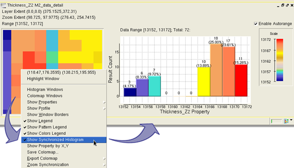
- Right‑click
on a colormap window and choose Show Profile to
view the profile plot options.Figure 14. Show Profile Plot Options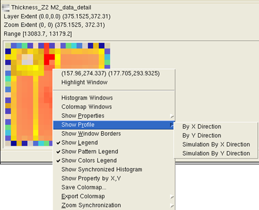
- Display
a profile plot of the design that represents thickness versus the
X or Y direction.
- Right-click
on the colormap window and choose Show Profile > By X
Direction. The profile plot is displayed in a new window
as shown in Figure 15.Figure 15. Profile Plot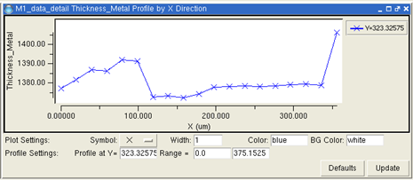
To display a profile plot of a colormap segment, Ctrl+left‑click the first and last points of a segment in the colormap window. The profile plot window displays the segment. If the first and last points are not in the same horizontal or vertical cut line, the plot for the cut line starts from first point (first click), and the horizontal or vertical direction is detected automatically as shown in Figure 16.
Figure 16. Profile Plots of Colormap Segments (X Direction and Y Direction)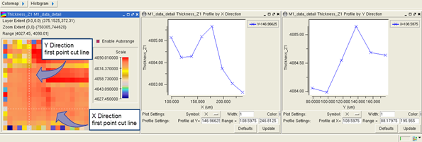To zoom in or zoom out on a profile, do one of the following:
To zoom in, hold down the right mouse button and move the cursor left to right. To zoom out, hold down the right mouse button and move right to left. Zooming out returns the plot to the previous zoom in view.
Hold down the right mouse button and choose Zoom In, Zoom Out, or Zoom All from the available menu options.
Use the keyboard shortcuts shown in Table 1.
Table 1. Zoom Shortcut Keys for CMP Analysis Shortcut
Command
Ctrl + a
Zoom all
Ctrl + z
Zoom in
Z
Zoom out
- You
can change the profile plot settings using the text fields and dropdown
lists. Right‑click in the lower‑left corner of the profile plot
window for a popup menu to show or hide Plot Settings, Grid Settings,
and Profile Settings. Adjust the range of the plot by entering new
values in the text field and clicking Update.
The default configuration of the profile plot settings can be redefined by choosing Setup > Histograms & Colormaps and specifying the Plot Settings and Grid Settings.
Figure 17. Profile Plot with User‑Defined Settings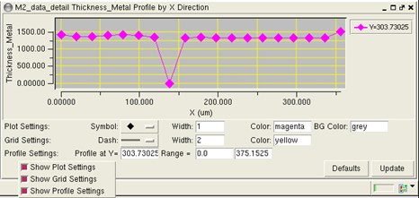Plot colors may be specified as Tk symbolic color names or RGB hexadecimal color codes (for example “blue” or “#0000FF”). Some valid color names are red, green, black, grey, blue, yellow, magenta, cyan, darkblue, slateblue, turquoise, lightgray, wheat, goldenrod, sandybrown, and coral.
For example, Figure 18 displays an updated profile plot with a red plot line, triangle symbol, green grid lines, and a gray background.
Figure 18. Profile Plot with Updated User‑Defined Settings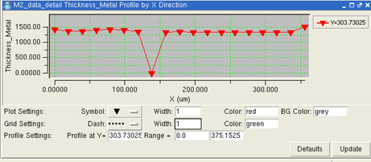The profile plot settings and values are shown in Table 2.
Table 2. Profile Plot Settings Settings
Name
Values
Description
Plot Settings
Symbol
Dropdown list selection.
Set the type of symbol for the plot.
Width
Number of pixels.
Set the width of the plot line.
Color
Color name or hexadecimal code.
Set the color of the plot line.
BG Color
Color name or hexadecimal code.
Set the background color of the plot.
Grid Settings
Dash
Dropdown list selection.
Set the dash style of the grid lines.
Width
Number of pixels.
Set the width of the grid lines.
Color
Color name or hexadecimal code.
Set the color of the grid lines.
Profile Settings
Profile at Y=
Coordinate in microns.
Specify profile Y coordinate.
Range =
Coordinate in microns.
Specify the range of the plot.
- Right-click
on the colormap window and choose Show Profile > By X
Direction. The profile plot is displayed in a new window
as shown in Figure 15.
- Find an area of interest and
view the colormap in Calibre DESIGNrev.
- Move your mouse over the red areas in the colormap to view the check results values.
- When you find a window reporting
a particularly high value for Thickness_Metal, click
the right mouse button to display the popup menu.
The first line of data displays the coordinates for that window.
- Click on the coordinates in
the popup menu.
Notice that the view in the Calibre DESIGNrev window changes. It now displays the area in the design represented by that window.
- In the Layers pane in Calibre
DESIGNrev, hide all layers except layer M1 and the rve highlight
layer. The blue hash mark square highlights the window selection.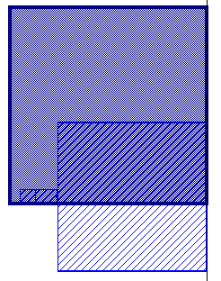
- When you are done analyzing hotspot rule data, close the colormap in the Calibre RVE for DFM window.
- View detailed properties:
You can also get a good overview of how well the design is doing against all rules by looking at rule statistics for all rules simultaneously.
- In the Calibre RVE for DFM window, click on the Layer Browser tab.
- Double‑click on the row for
M1_data_detail.
A Calibre RVE for DRC window appears as a new tab. Inside there is a list of properties with minimum, maximum and mean values. You might be particularly interested in these values when working with your own design. You can display a colormap or a histogram for any particular rule by clicking on the Histogram or Colormap options from the right‑click menu.
Figure 19. Viewing Individual Errors in Calibre RVE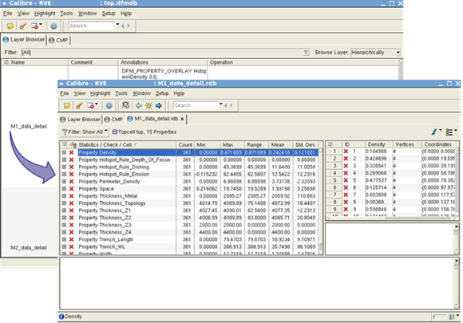 - Once you are done looking at the statistics, close the M1_data_detail.rdb tab and switch back to the CMP tab inside the Calibre RVE for DFM window.